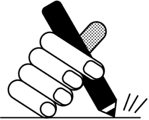
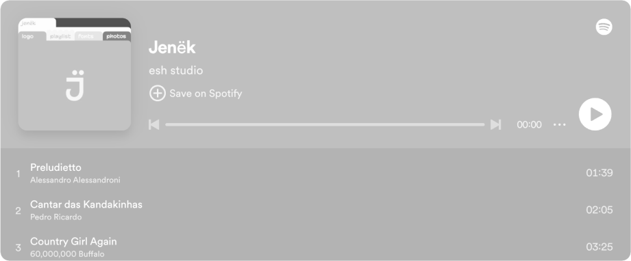
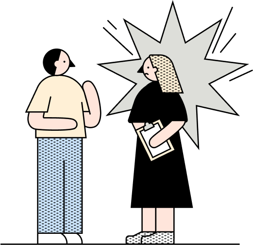
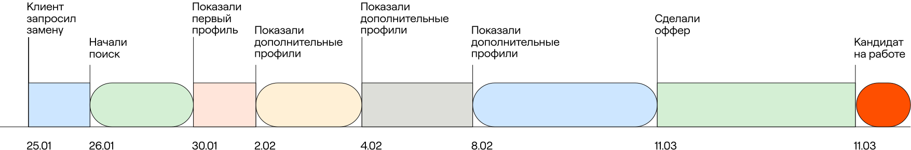
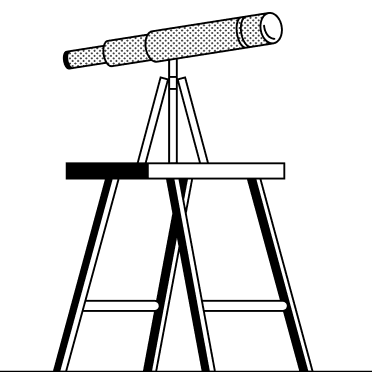

Как мы нашли клиенту двух специалистов вместо одного и почему нельзя было иначе
Git, Docker, MySQL, Angular 12
Как скорость ответа нанимающего менеджера влияет на закрытие вакансии: сравнили два проекта
Swagger, Postman, SOAP UI
10.08.2024
5 мин
В Spice IT обратилась российская IT-компания по автоматизации документооборота. Требовалось найти кандидата на позицию «Руководитель проектов». Мы быстро закрыли вакансию, но через два месяца специалист уволился. Повезло, что работали с клиентом в рамках услуги Рекрутмент. В ней как раз предусмотрена одноразовая замена. Она действует, только если сотрудник уходит раньше, чем заканчивается испытательный срок. Замену делаем бесплатно без всяких доплат.
Сегодня на примере кейса расскажем:
Клиент
Digital Epoche
Чем занимается
Внедрением корпоративных систем электронного документооборота
Размер компании
40 человек
Профиль кандидата
«Руководитель проектов»
Технологические стеки
PMBOK
Дедлайн поиска
2 месяца
Услуга
«Рекрутмент»
Мы не начинаем наем с разбега. Прежде погружаемся в бизнес, изучаем его цели и задачи. Это помогает разобраться, кого искать и какие профили будут для заказчика релевантными.
Вот что выяснили на этапе преворкинга.
В компании клиента работает команда разработчиков. Она отвечает за внедрение документооборота юрлицам. Ребята допиливают функционал, создают новые фичи, настраивают интеграции. Все по классике.
А есть командир этого корабля — руководитель проектов. На его плечах три функции:

Смотрите также
Как расширили воронку найма, чтобы закрыть вакансию в срок и сохранить бюджет
подробнееНайти нужно было как раз руководителя. Требовался проактивный, энергичный и вдумчивый человек, который погрузится в продукт, разберется в технических характеристиках.
Через месяц после начала поиска мы нашли кандидата, который сразу понравился клиенту. В ходе собеседования выяснили, почему человек ищет работу.
Оказывается, потому, что устал от бывшего работодателя. Начальник только и успевал накидывать задачи. Времени закрывать все катастрофически не хватало, а отказать боссу не получалось. Из-за переработок нарушился сон, аппетит, здоровье. В итоге человек не выдержал работу на износ и решил сменить компанию.
Наши эксперты проанализируют воронку и предложат инструменты
Записаться на диагностику

Найти нужно было как раз руководителя. Требовался проактивный, энергичный и вдумчивый человек, который погрузится в продукт, разберется в технических характеристиках.
Слова кандидата сразу вызвали опасение. Объяснили клиенту, что перед нами явно выгоревший человек. И хотя он идеально подходит по техническим навыкам, внутренних ресурсов на новый проект может не хватить. Нанимать такого специалиста рискованно
Слова кандидата сразу вызвали опасение. Объяснили клиенту, что перед нами явно выгоревший человек
Юлия Клементьева, руководитель направления контент-маркетинга
Мы настаивали на том, чтобы продолжить поиск, но клиент решил дать кандидату шанс. Тем более соискатель полностью подходил под профиль, вызывал доверие своим опытом. Да и сам рвался в бой: уверял, что справится с задачами, потому что их в разы меньше, чем на прошлой работе.

Через два месяца клиент сообщил, что нанятый специалист уходит.
Представителем клиента был исполнительный директор. Помимо закрытия вакансии, у него была куча других дел. Чтобы не отрывать его от прямых обязанностей, взяли на себя всю операционку. Например, помогли сформировать офер — конечно, предварительно все согласовав.
Для офера собрали задачи, требования, прописали зарплатную вилку и бонусы. Клиенту понравилось. По его словам, сам бы он потратил на это неделю.
Во время поиска кандидата в рамках замены нам удалось привести двух кандидатов, которые подошли клиенту. Одному из них сделали офер. Новый сотрудник уже вышел и помогает команде внедрять системы документооборота.

Темп работы в рамках гарантийной замены кандидата
Такие ситуации легко разрулить. Например, устроить дополнительные встречи с руководителем, дать новичку куратора, разбить онбординг на более мелкие этапы. Сотрудник видит, что его переживания небезразличны работодателю, и остается. Это гораздо выгоднее, потому что не приходится начинать поиск заново и откладывать старт проекта.
Помогли составить офер, чтобы разгрузить клиента
Помогли составить офер, чтобы разгрузить клиента
Иногда избежать увольнения невозможно, как, например, в нашем кейсе. Кандидату требовалась более простая работа либо длительный отпуск. Клиент не мог предложить ни первого, ни второго, поэтому решился на замену. Замена чуть растянула поиск, зато компания получила специалиста, который ей был нужен изначально.
Отправьте список позиций в наш бот — через 2 дня мы пришлём срез в PDF. Вся аналитика собрана вручную, без нейросетей и копипаста. В основе данных: зарплатные ожидания кандидатов и принятые офферы за последний месяц
Получить срез